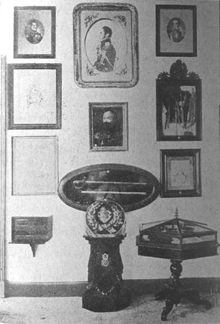

|
|  |
|
El Museo Histórico Nacional, Calle Moreno 330 (1891)
|
The museum, the first permanent institution exclusively dedicated to the display of post-independence history in Latin America, thus remained remarkedly constrained in its focus, which excluded both the colonial past (and thus in fact limited itself to the illustration of less than a century of 'national tradition') and the experiences of the vast majority of Argentina´s (already sparse) population, effectively identifying the nation with a tiny elite of wealthy Creoles. It is interesting to compare this type of display to the museums of natural history and anthropology founded at roughly the same moment in time: while these relied on the ex- and appropriation of objects encountered on the margins of national space (fossils, indigenous artefacts and human remains), making the margin visible in the centre (or rather, manufacturing in the space of the museum a particular image of the margin as temporally as well as spatially removed), here instead it were the memorials from the very core of elite society that were put on display for public edification.
|